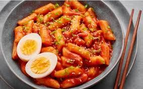

Isi form pemesanan dengan klik tombol pesan di bawah
Topoki
Diposting pada 14.00 WIB, 06 Oktober 2023

Topokki atau tteokbokki adalah hidangan Korea yang terbuat dari tepung beras yang dimasak dalam bumbu gochujang yang pedas dan manis. Topokki biasanya disajikan dengan bahan tambahan seperti eomuk (fishcake), telur rebus, dan daun bawang. Ada banyak variasi topokki, termasuk curry-tteokbokki, cream sauce-tteokbokki, jajang-tteokbokki, seafood-tteokbokki, rose-tteokbokki, dan galbi-tteokbokki